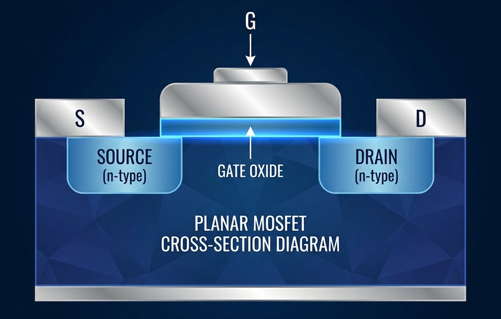
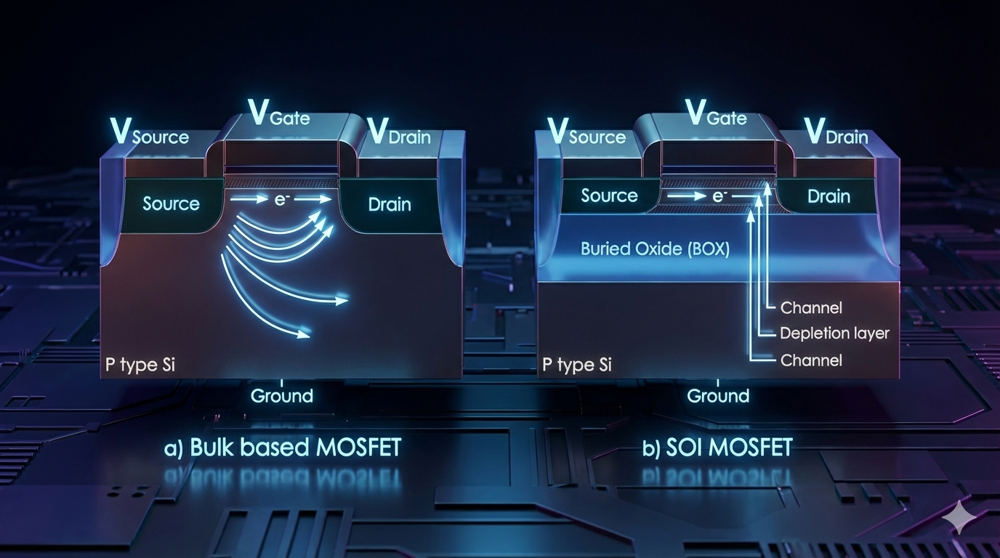

选择下方按钮查看不同工艺节点下的晶体管结构。
从1960年贝尔实验室的突破性发明，到如今3纳米工艺的量产，探索MOSFET技术如何一步步改变世界
金属-氧化物-半导体场效应晶体管

开罗大学学士，普渡大学机械工程博士。1949年加入贝尔实验室，开创性地解决了硅表面钝化问题。后创立 Atalla Corporation，发明了保护全球 ATM 交易的硬件安全模块，被誉为"PIN 码之父"。2009年入选美国发明家名人堂。
首尔大学物理学学士，俄亥俄州立大学电子工程博士。1959年加入贝尔实验室，工作29年至退休。1967年与施敏共同发明浮栅 MOSFET，奠定了 EPROM、EEPROM 和闪存的基础。后任 NEC 研究院创始院长。2009年入选美国发明家名人堂。
1955年，贝尔实验室的 Carl Frosch 和 Lincoln Derick 在一次实验事故中，意外地在硅片表面生长出一层二氧化硅，发现这层薄膜具有优异的表面钝化效果。Atalla 敏锐地意识到这一发现的价值，花费数年时间深入研究热氧化工艺。
1959年11月，Atalla 和 Kahng 将这一技术与场效应原理相结合，成功演示了世界上第一个实用的 MOS 晶体管。他们在1960年初将其命名为"硅-二氧化硅场感应表面器件"。然而，贝尔实验室当时对集成电路缺乏兴趣，这项发明最初被忽视。但 Fairchild 和 RCA 的研究人员很快意识到其巨大潜力。
如今，MOSFET 已成为人类历史上制造数量最多的器件，是现代电子学的基石，支撑着从智能手机到超级计算机的一切设备。
绝缘体上硅场效应晶体管

IBM 是 SOI 技术商业化的先驱。1998年，IBM 首次在其 PowerPC 处理器中采用 SOI 技术，用于高端服务器和游戏主机（如 PlayStation 3、Xbox 360）。IBM 的研究证明 SOI 可带来高达 25-35% 的性能提升或 3 倍的功耗降低。
随着晶体管尺寸进入亚微米时代，短沟道效应和漏电流问题日益严峻。传统的体硅（Bulk Silicon）工艺已难以满足高性能、低功耗的双重需求。
SOI 技术的核心创新是在硅衬底与有源器件层之间插入一层薄薄的埋入氧化层（Buried Oxide, BOX），通常由 SIMOX（氧注入隔离）或晶圆键合技术制备。这层绝缘层有效地将晶体管与衬底隔离。
SOI 技术分为全耗尽型（FD-SOI）和部分耗尽型（PD-SOI）两种。FD-SOI 因其更简单的制造工艺和更优异的低功耗特性，成为物联网、可穿戴设备和汽车电子的首选技术。法国 Soitec 公司是全球领先的 SOI 晶圆供应商。
鳍式场效应晶体管 / 三栅极晶体管
国立台湾大学电机学士，加州大学伯克利分校博士。1976年起任教于伯克利，2001-2004年任台积电首任首席技术官。著有5本专著、发表1000余篇论文、拥有100余项美国专利。2016年荣获美国国家技术与创新奖章，2020年获 IEEE 最高荣誉奖——IEEE 荣誉勋章，被誉为"微电子学远见者"。
1990年代末，摩尔定律遭遇危机。当晶体管尺寸缩小到 25nm 以下时，传统平面结构的栅极已无法有效控制沟道电流，漏电流急剧增加，芯片过热问题日益严重。
1997年，在美国国防高级研究计划局（DARPA）的资助下，胡正明教授带领他在伯克利的团队开始探索一种全新的晶体管架构。1999年，他们提出了革命性的FinFET设计：将传统的平面沟道"竖立"起来，形成一个类似鱼鳍的垂直结构，栅极从三个方向包裹沟道。
2000年12月，他们在论文中正式命名这一结构为"FinFET"。然而，从实验室到商业量产花费了十多年时间。2011年，Intel 宣布在其 22nm 工艺中首次商用 FinFET（Intel 称之为 3D Tri-Gate），实现了同功耗下 18% 的性能提升。Intel 评价这是"50年来半导体技术最激进的变革"。
FinFET 技术此后被所有主要芯片制造商采用，成为 22nm 至 5nm 工艺节点的主流技术，为智能手机、AI 芯片和云计算的爆发式增长提供了关键支撑。
全环绕栅极场效应晶体管 / 纳米片晶体管
2000年代初开始研究 GAA 结构，2017年启动 3nm 工艺开发。2022年6月率先量产 3nm GAAFET 芯片，采用专有的多桥沟道（MBCFET）架构。相比 5nm 工艺，功耗降低 45%、性能提升 23%、面积缩小 16%。
2021年5月宣布全球首个 2nm 芯片技术突破，采用第二代纳米片架构。单芯片可容纳500亿个晶体管，栅极长度仅 12nm。相比 7nm 工艺，性能提升 40% 或功耗降低 75%。
GAA 晶体管的概念最早可追溯到 1988 年东芝研究团队的论文。2006年，韩国先进科技院（KAIST）展示了首个 3nm 级别的 GAA 原型器件。然而，将这一概念转化为可量产的技术花费了十余年时间。
GAAFET 的核心创新是将 FinFET 的垂直"鳍"替换为水平堆叠的纳米片（Nanosheet）或纳米线（Nanowire），栅极从四个方向完全包裹每一层沟道。这种"全环绕"结构提供了最极致的静电控制能力，是克服 FinFET 在 3nm 以下节点限制的关键。
纳米片的宽度可以灵活调整：增加宽度可提升驱动电流（性能优先），减小宽度则降低功耗（效率优先）。这种设计灵活性是 GAAFET 的独特优势。
随着三星和 Intel 竞相推进 3nm/2nm 工艺，GAAFET 已成为后摩尔时代继续延续半导体微缩路线图的关键技术。台积电也计划在其 2nm（N2）节点采用纳米片架构。